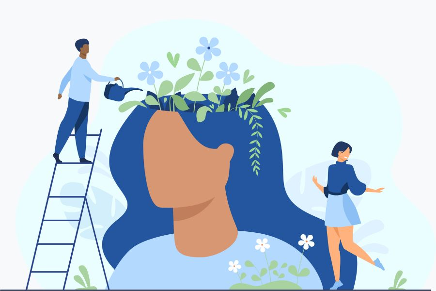

Básico
Para ter um bom estilo de vida, concentre-se em manter uma dieta equilibrada, praticar exercícios regularmente, dormir bem, cuidar da saúde mental, manter relacionamentos saudáveis, equilibrar trabalho e vida pessoal, e dedicar tempo ao auto-cuidado e desenvolvimento pessoal. Essas práticas ajudam a promover o bem-estar físico e emocional.

Manter uma vida saudável nos dias de hoje é essencial. Coma alimentos nutritivos, faça exercícios regularmente e durma o suficiente. Gerencie o estresse, cultive relacionamentos positivos e faça check-ups médicos regulares. Evite substâncias nocivas e reserve tempo para cuidar de si mesmo. Esses passos simples podem melhorar sua saúde física, mental e emocional, promovendo um estilo de vida mais equilibrado e gratificante.
Voltar